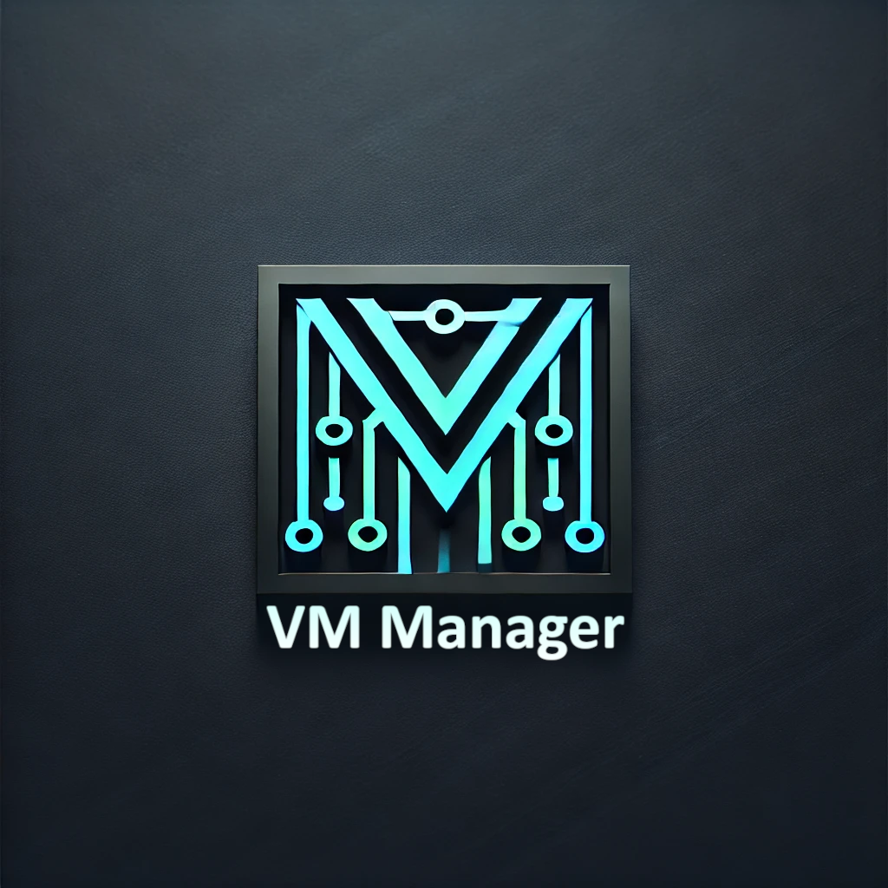
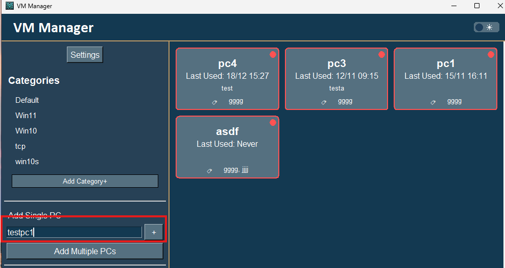
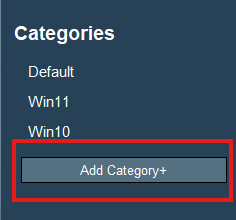
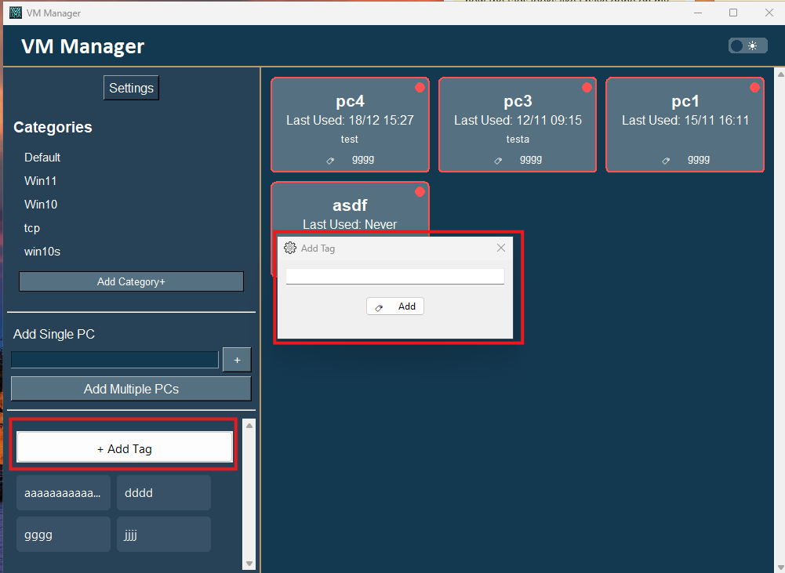
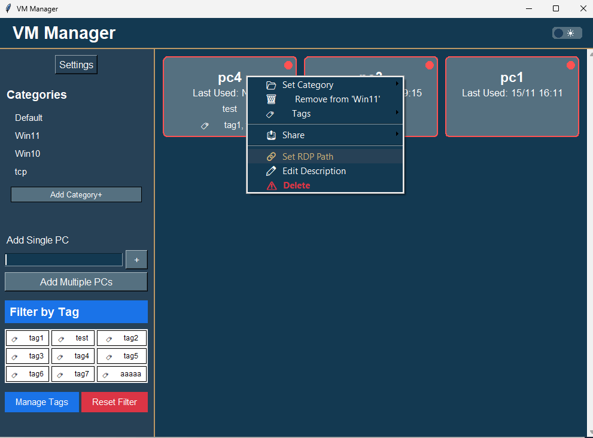
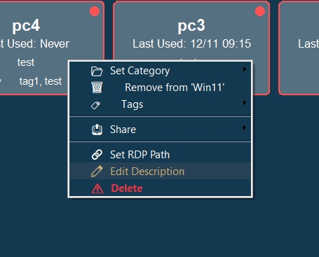
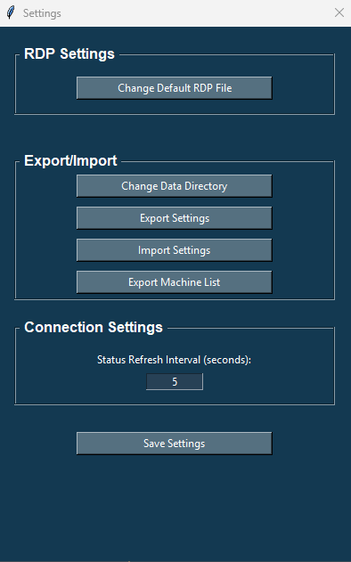
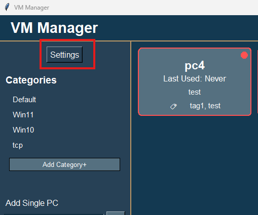
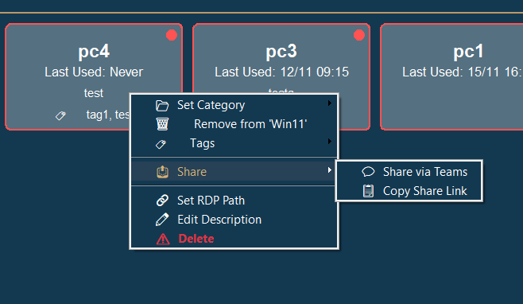

VM Manager - How To Guide

Table of Contents
Initial Setup
First Launch
When you first launch VM Manager, you'll be prompted to select a default RDP file:

- Click "OK" on the prompt
- Browse to select your default RDP file
- The application will create necessary folders automatically
Theme Selection
VM Manager supports both light and dark themes:

- Click the theme toggle (‚òÄÔ∏è/üåô) in the header
- Theme changes apply immediately
- Selection persists between sessions
Adding Virtual Machines
Adding a Single Machine
You can add machines one at a time using the sidebar:

- Enter the machine name in the "Add Single PC" field
- Click "Add PC"
- The machine will appear in the main view
Adding Multiple Machines
For batch additions:

- Enter machine names in the text area (one per line)
- Click "Add PCs"
- All machines will be added to the main view
Managing Categories
Creating and Managing Categories
To organize your machines into categories:

-
Click the large "Add Category+" button in the sidebar
-
Add a new category:
- Enter category name
- Choose category color from the color palette
- Click OK to create
-
Category Features:
- Hover effects for better interaction
- Checkmark indicators for selected categories
- Color indicators on machine tiles showing category assignment
- Right-click menu for category management
-
Managing Existing Categories:
- Right-click any category for options:
- Rename category
- Change category color
- Delete category
- Selected categories show checkmark indicators
- Click again to deselect a category
Category Organization
 Tips for effective category management:
Tips for effective category management:
- Use clear, descriptive category names
- Assign distinct colors for visual organization
- Use the category indicator on machine tiles for quick reference
- Categories can be renamed without losing assignments
- Click categories to toggle filtering
- Categories can be edited or deleted through the right-click menu
- Drag and drop categories to reorder them (except Default)
Category Reordering
To reorganize your categories:
- Click and hold any category (except Default)
- Drag the category up or down to the desired position
- Release to drop the category in its new position
- The new order is automatically saved
Tips for category organization:
- Default category always stays at the top
- Most used categories can be moved to the top for easy access
- Related categories can be grouped together
- Order is preserved between sessions
To use the tagging system:

-
Add tags:
- Click "Add Tag+" in the sidebar
- Enter new tag name in the dialog
- Click "OK" or press Enter
- Tags will appear in the sidebar grid layout
-
Assign tags to machines:
- Method 1: Drag and drop
- Drag a tag from the sidebar onto any machine
- The tag will be assigned instantly
- Method 2: Right-click menu
- Right-click any machine
- Select "Manage Tags"
- Check/uncheck tags to assign/remove them
-
Filter by tags:
- Click tags in the sidebar to filter machines
- Select multiple tags to combine filters
- Selected tags will be highlighted
- Click a selected tag again to deselect it
- Machines must match all selected tags to be shown
- Right-click any tag in the sidebar for options:
- Remove tag (will remove from all machines)
- View machines using this tag
- Hover over tags to see tooltips with additional information
- Tags are automatically saved and persist between sessions
Tag Organization Tips
- Use consistent naming conventions
- Keep tags simple and descriptive
- Combine tags with categories for better organization
- Use drag-and-drop for quick assignment
- Regular cleanup of unused tags
- Multiple tags can be assigned to the same machine
Tag Filtering Strategy
- Tags work alongside category filters
- Combining multiple tags creates more specific filters
- Active filters are visually highlighted
- Clear filters by deselecting tags
- Tag filters update the machine view in real-time
Connecting to Machines
Basic Connection
To connect to a machine:

- Click on any machine tile
- The RDP connection will launch automatically
- Status indicator shows if machine is available (green) or unavailable (red)
Custom RDP Connections
To use a specific RDP configuration:

- Right-click the machine
- Select "Set RDP Path"
- Choose your custom RDP file
- Future connections will use this configuration
Managing Machines
Right-click any machine to access management options:

- Add/Edit Description
- Set Custom RDP Path
- Share Machine Configuration
- Delete Machine
Adding Descriptions
To add a description:

- Right-click the machine
- Select "Add or Edit Description"
- Enter your description
- Click OK
Customizing Settings
Settings Panel

Access application settings:

- Click the Settings button in the sidebar
- Settings are organized into categories:
- Machine Settings:
- Default RDP File: Choose a different RDP template file
- Machine sharing options
- Custom RDP configurations
- Application Settings:
- Status Refresh Interval: Control check frequency
- Data Directory: Change storage location
- Theme preferences
- User Preferences:
- Display options
- Behavior settings
- Import/Export:
- Settings backup/restore
- Machine list management
- Shared configurations
Changing Default RDP File
To change the default RDP configuration:
- Open Settings
- Navigate to Machine Settings
- Click "Change Default RDP File"
- Browse to select your new RDP template file
- Click OK to save
Note: This affects new connections only. Existing machine-specific RDP settings are preserved.
Adjusting Status Refresh
To modify how often machine status is checked:
- Open Settings
- Go to Application Settings
- Find the "Status Refresh Interval" setting
- Enter your preferred interval in seconds
- Click Save
Tip: A longer interval reduces network traffic but makes status updates less frequent.
Sharing Machines
Exporting Machine Configurations
To share machine settings with others:

- Right-click the machine you want to share
- Select "Share Machine Configuration"
- Choose which settings to include:
- RDP configuration
- Machine description
- Custom paths
- Click "Export" and choose save location
Importing Shared Machines
To import shared machine configurations:

- Open Settings
- Go to Import/Export section
- Click "Import Shared Configuration"
- Browse to the shared configuration file
- Review and confirm the import
Note: Imported settings will not override existing machines unless specified.
Managing Shared Configurations
To manage your shared machines:
- Open Settings
- Navigate to Import/Export
- View shared configuration history
- Remove old shared configurations
- Update sharing preferences
Tips and Tricks
Status Monitoring
- Green indicator: Machine is available
- Red indicator: Machine is unavailable
- Last used time updates automatically
Keyboard Shortcuts
Enter in single machine field to quickly add- Right-click for context menu
- Mouse wheel to scroll through machines
Ctrl+S to quickly share selected machineCtrl+I to import configurationsCtrl+E to export settings
Best Practices
- Use descriptive names for machines
- Add descriptions for better organization
- Regular exports for backup
- Customize RDP settings for specific needs
- Share configurations with team members
- Keep shared configurations organized
- Review and update machine settings periodically
Troubleshooting Common Issues
-
Connection Problems
- Verify machine name
- Check network connectivity
- Confirm RDP port access
-
Sharing Issues
- Verify file permissions
- Check configuration completeness
- Ensure compatible settings
-
Settings Issues
- Clear application cache
- Verify write permissions
- Check available disk space
For additional support, consult the full documentation or contact support.